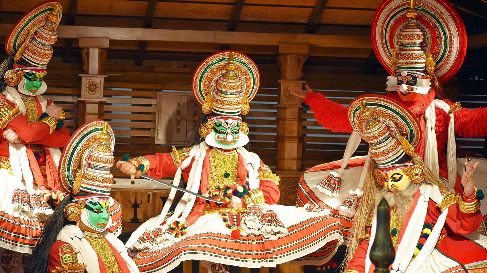
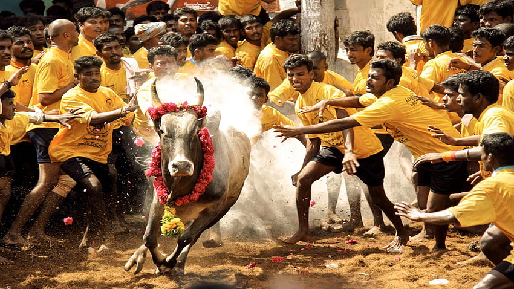
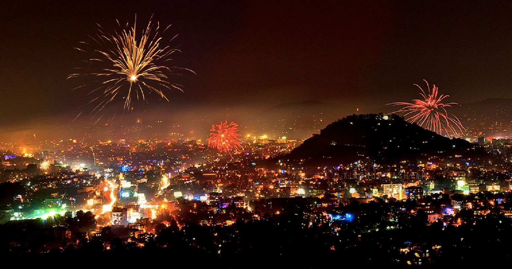
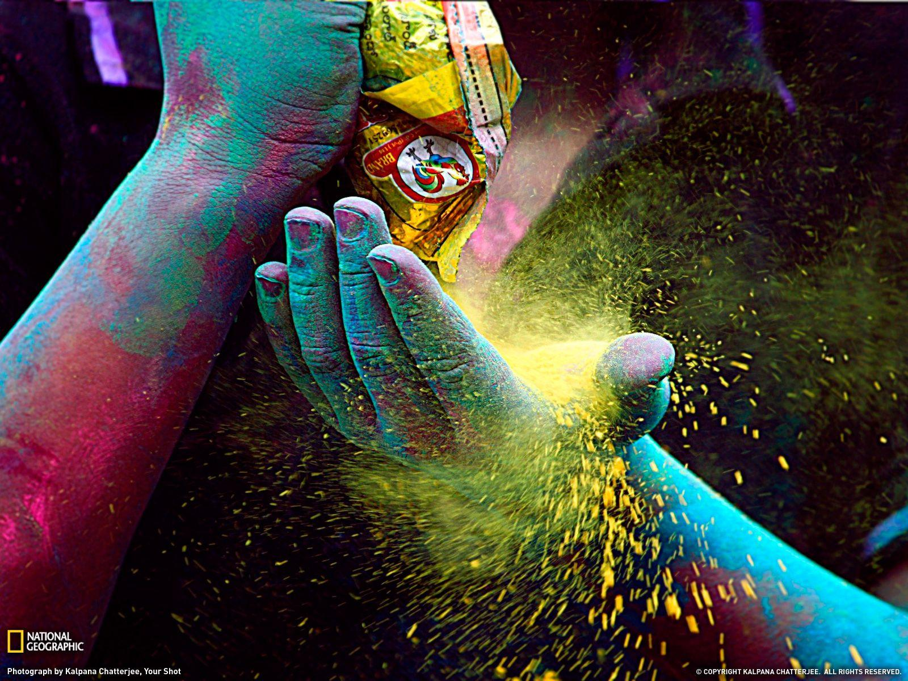

Indian culture is incredibly diverse and rich, shaped by thousands of years of history, traditions, and regional variations. It encompasses a wide range of art forms, languages, religions, and customs. From the vibrant festivals like Diwali and Holi to classical music and dance forms such as Bharatanatyam and Kathak, Indian culture is known for its colorful and celebratory nature. The country’s cuisine, which varies from region to region, is also a significant aspect of its cultural identity, characterized by a variety of spices and flavors. At its core, Indian culture values family, spirituality, and respect for tradition, making it a tapestry of profound and enduring traditions.

KATHAKALI is a traditional Indian dance-drama from Kerala, known for its elaborate costumes, intricate makeup, and expressive storytelling.
- Makeup: Colorful and symbolic face painting that indicates character traits.
- Costume: Ornate attire that defines the role and status of characters.
- Mudras: Hand gestures used to convey meaning.
- Rasa: Emotional expressions that are central to the performance.
- Abhinaya: The art of expression through gestures and facial expressions.
Kathakali performances often depict stories from Hindu epics, blending dramatic dance with rich musical traditions.

JALLIKATTU is a traditional bull-taming sport celebrated primarily in the Indian state of Tamil Nadu. The event is held during the Pongal festival, which marks the harvest season. Participants, known as "bull tamers," attempt to hold onto the bull's hump and ride or control it as it attempts to run free. The bulls are specially bred for this event, and the competition can be both thrilling and dangerous.
Jallikattu has deep cultural and historical roots, dating back over 2,000 years. It is often seen as a way to honor and celebrate the strength and agility of the bulls, which are considered sacred and integral to agricultural life in Tamil Nadu.
The sport has been controversial, particularly regarding animal rights and safety concerns. Over the years, there have been debates and legal battles over its ethical implications and the treatment of the animals involved. Despite the controversies, Jallikattu remains a significant part of Tamil cultural heritage and continues to be passionately supported by many in the region.

Diwali, also known as Deepavali, is a major Hindu festival celebrated across India and by Indian communities worldwide. It typically takes place in October or November and lasts for five days. The festival is renowned for its vibrant decorations, including oil lamps (diyas) and colorful lights.
The celebration honors the victory of light over darkness and good over evil. Key traditions include cleaning and decorating homes, worshipping the goddess Lakshmi for prosperity, and sharing sweets and gifts with family and friends. Fireworks displays and communal feasts add to the festive atmosphere. Diwali is a time for joy, renewal, and reflection.

Ganesh Chaturthi, also known as Vinayaka Chaturthi, is a significant Hindu festival celebrating the birth of Lord Ganesha, the elephant-headed god of wisdom, prosperity, and new beginnings. The festival typically takes place in August or September and lasts for 10 days.
During Ganesh Chaturthi, people create or purchase clay idols of Ganesha, which are decorated with vibrant colors and placed in homes or public pandals (temporary structures). The festival involves various rituals, including prayers, devotional songs, and offerings of sweets like modaks, which are believed to be Ganesha's favorite.
On the final day, known as Anant Chaturdashi, the idols are immersed in water, symbolizing Ganesha's return to his celestial abode. This immersion, or visarjan, is accompanied by grand processions and chants of "Ganpati Bappa Morya" (a call to return next year).
Ganesh Chaturthi is marked by its lively and joyful celebrations, reflecting the deep reverence and affection devotees have for Lord Ganesha.
